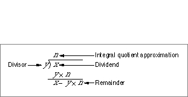

Legacy Document
Important: The information in this document is obsolete and should not be used for new development.
Important: The information in this document is obsolete and should not be used for new development.


remainder, remquo, and fmod
You can use theremainder,remquo, andfmodfunctions to perform the remainder operation recommended in the IEEE standard.
double_t remainder (double_t x, double_t y); double_t remquo (double_t x, double_t y, int *quo); double_t fmod (double_t x, double_t y);
x- Any floating-point number.
y- Any floating-point number.
quo- On return, the signed lowest seven bits (in the range of -127 to +127, inclusive) of the integer value closest to the quotient . This partial quotient might be of use in certain argument reduction algorithms.
DESCRIPTION
The IEEE remainder (rem) operation returns the result of the following computation.rem
where n is the integer nearest the exact value of the quotient . This expression can be found even in the conventional integer-division algorithm, shown in Figure 6-1.
Figure 6-1 Integer-division algorithm

Whenever , n is even.
If the value of r is 0, the sign of r is that of x.
The rem operation is always exact.
The IEEE rem operation differs from other commonly used remainder and modulo operations. It returns a remainder of the smallest possible magnitude, and it always returns an exact remainder. Other remainder functions can be constructed from the IEEE remainder function by appropriately adding or subtracting y.
EXCEPTIONS
When x and y are finite, nonzero floating-point numbers in single or double format, the result of x rem y is exact.SPECIAL CASES
Table 6-8 shows the results when one of the arguments to the rem operation is a zero, a NaN, or an Infinity. In this table, x is a finite, nonzero floating-point number.
Table 6-8 Special cases for floating-point remainder Operation Result Exceptions raised +0 rem x +0 None x rem NaN Invalid rem x None x rem NaN Invalid x rem NaN NaN None[10] NaN rem x NaN None[10] x rem + 
x None + NaN Invalid x rem x None rem x NaN Invalid EXAMPLES
z = remainder(5, 3); /* z = -1. */ /* 5 rem 3 = 5 - 3 2 = -1 because 1 < 5/3 < 2 and because 5/3 = 1.66666... is closer to 2 than to 1, quo is taken to be 2. */ z = remainder(43.75, 2.5); /* z = -1.25. */ /* 43.75 rem 2.5 = 43.75 - 2.5 18 = -1.25 because 17 < 43.75/2.5 < 18 and because 43.75/2.5 = 17.5 is equally close to both 17 and 18, quo is taken to be the even quotient, 18. */ z = remainder(43.75, +INFINITY); /* z = 43.75 */ /* 43.75 rem
[10] If the NaN is a signaling NaN, the invalid exception is raised.